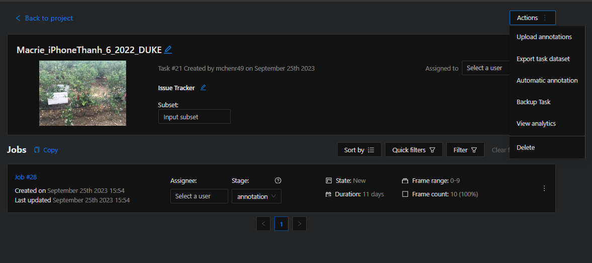
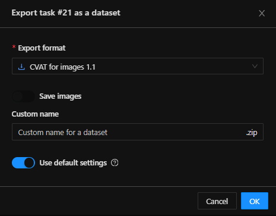
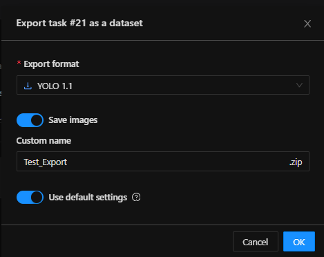
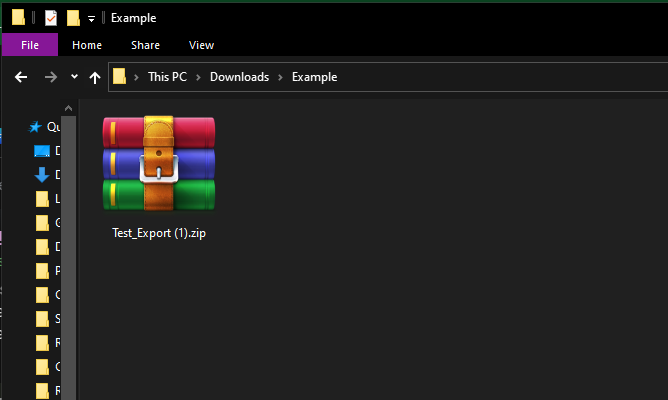
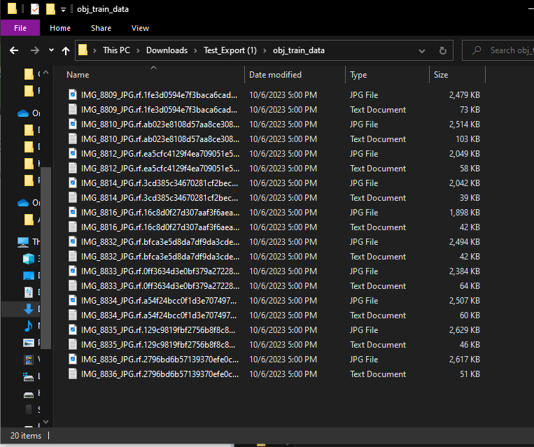
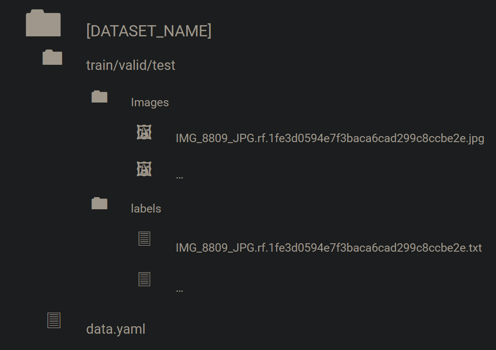
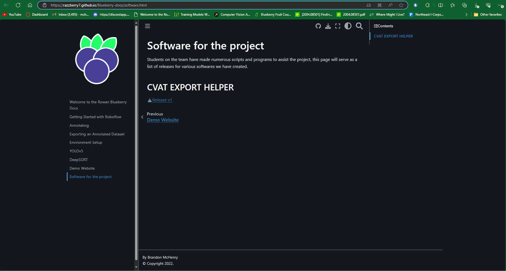
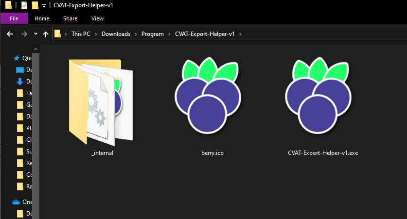
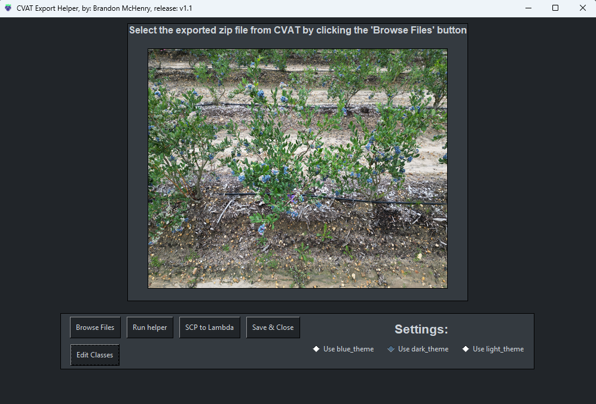
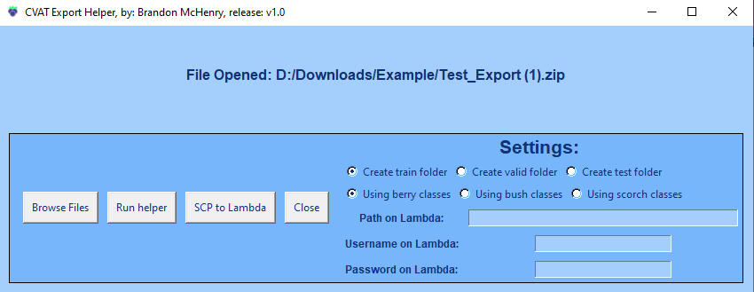

Exporting an Annotated Dataset (to Lambda)#
Training a model is very resource-intensive which requires us to utilize the power on the Lambda servers. In order to train a model, we will need to export our datasets to the Lambda servers. This process can be troublesome, so this documentation should make it easier.
Exporting on CVAT#
To export on CVAT, go to any task you wish to export and click the Actions button at the top right. Then click on Export task dataset.

This will open up a pop-up that looks like this:

On this pop-up, change the Export format to YOLO 1.1 (located at the bottom of the drop-down menu), enable the Save Images toggle, and give the exported dataset a name following the naming conventions outlined here: Naming Convention

The dataset should then start downloading locally in a ZIP file like this one:

If you extract the export from this ZIP file, our data looks like this.

This is actually a problem, because our data isn’t following the file structure that we have traditionally used (not to mention the images and labels are not kept separate, which could be problematic, and there is no data.yaml file that YOLO needs for their scripts). To resolve this, let’s look at what file structure DOES work (and that we use).
Dataset File Structure (Modeled after Roboflow Export)#
Students in this research project have traditionally used Roboflow as the platform to annotate and export data. As of Fall 2023, we have switched to using CVAT, which means our process of exporting has changed. To match the organization of our datasets with our older “Roboflow-exported” data, we have a series of steps to export data from CVAT.
But, before we blindly export our data following those steps, we must know what structure our files will follow. Here’s what the file structure looks like:

The top-most directory is the name of the dataset that you are exporting. (See above for the naming convention outline).
Within this directory there are subdirectories for /train/, /valid/, and/or /test/. Whether or not these subdirectories exist depends on your use case for the data.
Within the /train/, /valid/, and/or /test/ directories, there are two subdirectories, /images/ and /labels/. As you can guess, the images for the dataset are in the /images/ directory, and the annotations are found in a txt file (with the same name as the images) in the /labels/ directory.
Then, finally, on the same level as the /train/, /valid/, and/or /test/ directory(s), there is a data.yaml file (yaml is special file type, just think of it as another kind of txt file). This data.yaml file is used to store paths to our data when either training, validating, or testing a model.
The inside of a data.yaml file looks something like this (can be different depending on classes):
train: ./data/training_data/[DATASET_NAME]/train/images
val: ./data/training_data/[DATASET_NAME]/valid/images
test: ./data/training_data/[DATASET_NAME]/test/images
nc: 2
names: ['blue', 'green']
The values for train/val/test, are all relative paths from where the train.py, val.py, or detect.py scripts (default scripts in the YOLOv5 repository) are located. If these paths are incorrect, running any YOLOv5 scripts will produce errors relating to paths that don’t exist, so it should be easy to tell if you have incorrect paths.
That example uses relative paths, but we’re starting to use more absolute paths to avoid issues with relative path locations. So, a data.yaml can also look like this:
train: /mnt/data2/drone/[YOUR_NAME]/yolov5/data/training_data/[DATASET_NAME]/train/images
val: /mnt/data2/drone/[YOUR_NAME]/yolov5/data/training_data/[DATASET_NAME]/valid/images
test: /mnt/data2/drone/[YOUR_NAME]/yolov5/data/training_data/[DATASET_NAME]/test/images
nc: 2
names: ['blue', 'green']
In the data.yaml, there is also data relating to the number of classes (nc), and what the names of the classes are. This values will be different depending on the model you are training.
Recreating this File Structure with CVAT#
Because recreating that file structure can be tedious, we’re going to use a custom-made application to expedite the process.
The CVAT Export Helper#
The program we’re going to use is called “The CVAT Export Helper”, and can be found on this documentation website on the Software page.

Note: As of 1/18/24 the program does NOT work on Mac/Linux.
After downloading and extracting the program from the zip file, you should see a folder that looks like this:

Opening the program with the executable file, you should see something like this:

Or perhaps something like this (an older version):

Depending on the release version, the buttons/settings may be a bit different, but at its core they should all be capable of helping the export process.
Settings#
As mentioned previously, the settings may differ from version to version of this application.
In older versions of the application, the settings pane has various settings that are required to run the program correctly. These allow you to specify a type of folder (train/valid/test) to create to hold the data you’re refactoring/exporting, select the type of class you are using, and specify the details for SCP-ing to Lambda.
In newer versions of the application, the settings pane only has options to change the color scheme of the application.
Conclusion#
You now know how to:
- Export a dataset from CVAT
- Best re-structure the format of our datasets
- Use the CEH to make exporting easier
With this information, let’s continue on to Training.